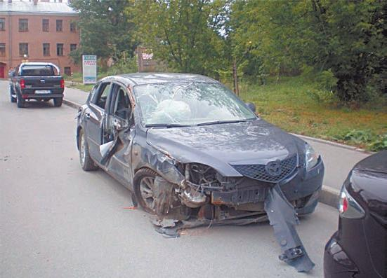

Тяжесть последствий ДТП.
Каждое дорожно-транспортное происшествие влечет за собой возникновение тех или иных последствий. Эти последствия могут быть разными, поэтому по степени их тяжести все дорожно-транспортные происшествия делятся на три категории:
> со смертельным исходом;
> с телесными повреждениями;
> с нанесением материального ущерба.
Самыми тяжелыми считаются дорожно-транспортные происшествия, повлекшие гибель людей. Это неудивительно: травмы можно вылечить (хотя и не все), автомобиль отремонтировать (а если и нет – это не самое страшное), а вот человека воскресить, увы, невозможно (рис. 7.10).

Рис. 7.10. К сожалению, аварий на российских дорогах меньше не становится
Телесные повреждения делятся на три группы. Под легкими телесными повреждениями подразумевается причинение вреда здоровью пострадавших, которое повлекло лишь несущественное расстройство здоровья или непродолжительную утрату работоспособности. Телесные повреждения средней тяжести – это повреждения, которые не представляют опасности для жизни пострадавшего, однако приводят к длительному расстройству его здоровья или к значительной стойкой утрате общей трудоспособности менее чем на одну треть.
Самыми опасными являются тяжкие телесные повреждения. Они влекут за собой причинение вреда, представляющего угрозу для жизни пострадавшего, либо потерю зрения, речи, слуха или какого-либо органа, утрату этим органом его функций. Кроме того, тяжкими телесными повреждениями признается причинение иного вреда здоровью, повлекшее за собой расстройство здоровья, сопряженное со значительной стойкой утратой общей трудоспособности не менее чем на одну треть, либо повлекшее иные тяжелые последствия.
Дорожно-транспортные происшествия, последствия которых ограничиваются лишь причинением материального ущерба, можно считать самыми безобидными. Материальным ущербом является причинение вреда транспортным средствам, грузам или иному имуществу (в том числе дорожному оборудованию и техническим средствам организации дорожного движения), не признаваемого крупным. Что касается крупного материального ущерба, то под ним подразумевается уничтожение или существенное повреждение транспортного средства, груза или иного имущества (в том числе дорожного оборудования и технических средств организации дорожного движения).
В соответствии с действующим Кодексом Российской Федерации об административных правонарушениях нарушение Правил дорожного движения или правил эксплуатации транспортного средства, повлекшее причинение легкого вреда здоровью потерпевшего, карается штрафом от 1000 до 1500 рублей или лишением водительского удостоверения на срок от 1 года до 1,5 лет. Что касается нарушения Правил дорожного движения или правил эксплуатации транспортного средства, повлекшего причинение вреда средней тяжести здоровью потерпевшего, то здесь санкции более суровые: штраф от 2000 до 2500 рублей или лишение права управления транспортным средством на срок от 1,5 до 2 лет.
При причинении крупного материального ущерба или тяжкого (а иногда и среднего) вреда здоровью пострадавших, а также в случае гибели людей будет возбуждено уголовное дело. Возбуждение уголовного дела по дорожно-транспортному происшествию, случившемуся по вине кого-либо из водителей, осуществляется в соответствии со статьей 264 «Нарушение Правил дорожного движения и эксплуатации транспортных средств» Уголовного кодекса Российской Федерации, текст которой приведен ниже.
1. Нарушение лицом, управляющим автомобилем, трамваем либо другим механическим транспортным средством, Правил дорожного движения или эксплуатации транспортных средств, повлекшее по неосторожности причинение тяжкого или средней тяжести вреда здоровью человека, – наказывается ограничением свободы на срок до пяти лет, либо арестом на срок от трех до шести месяцев, либо лишением свободы на срок до двух лет с лишением права управлять транспортным средством на срок до трех лет или без такового.
2. То же деяние, повлекшее по неосторожности смерть человека, – наказывается лишением свободы на срок до пяти лет с лишением права управлять транспортным средством на срок до трех лет.
3. Деяние, предусмотренное частью первой настоящей статьи, повлекшее по неосторожности смерть двух или более лиц, – наказывается лишением свободы на срок от четырех до десяти лет с лишением права управлять транспортным средством на срок до трех лет.
В указанной статье используется такое понятие, как «другие механические транспортные средства». Под ними подразумеваются троллейбусы, а также трактора и иные самоходные машины, мотоциклы и иные механические транспортные средства.
Знайте, что если в аварии не было пострадавших, а транспортные средства повреждены незначительно, то участники ДТП по обоюдному согласию могут не вызывать наряд ГИБДД, а покинуть место происшествия. Перед этим они должны сами рассчитать ориентировочную величину ущерба и определить, кто и кому будет его возмещать. Данное положение приняли, чтобы предотвратить возникновение лишних пробок на и без того перегруженных российских дорогах. Ведь нередко пробки образуются по причине незначительных аварий.
Но, если по взаимному согласию решить вопрос не получилось, нужно непременно вызвать наряд ГИБДД, чтобы он зафиксировал дорожно-транспортное происшествие и оформил его в соответствии с законодательством. Санкции за оставление места аварии оговорены в статье 265 Уголовного кодекса Российской Федерации, текст которой приведен ниже.
Оставление места дорожно-транспортного происшествия лицом, управляющим транспортным средством и нарушившим Правила дорожного движения или эксплуатации транспортных средств, в случае наступления последствий, предусмотренных статьей 264 настоящего Кодекса, – наказывается ограничением свободы на срок до трех лет, либо арестом на срок до шести месяцев, либо лишением свободы на срок до двух лет с лишением права занимать определенные должности или заниматься определенной деятельностью на срок до трех лет или без такового.
Однако санкции за оставление места аварии предусмотрены и частями 1 и 2 статьи 2.27 Кодекса Российской Федерации об административных правонарушениях, в соответствии с которыми невыполнение водителем обязанностей, предусмотренных Правилами дорожного движения, в связи с дорожно-транспортным происшествием, участником которого он является, за исключением случаев, предусмотренных частью 2 статьи 12.27 КоАП РФ, влечет наложение штрафа в размере 1000 рублей. В соответствии с частью 2 этой же статьи оставление водителем в нарушение Правил дорожного движения места дорожно-транспортного происшествия, участником которого он являлся, карается лишением водительского удостоверения на срок от 1 до 1,5 лет или административным арестом на срок до 15 суток. Иначе говоря, при наличии серьезных последствий оставление места дорожно-транспортного происшествия карается в соответствии с Уголовным кодексом, без серьезных последствий – Кодексом об административных правонарушениях.